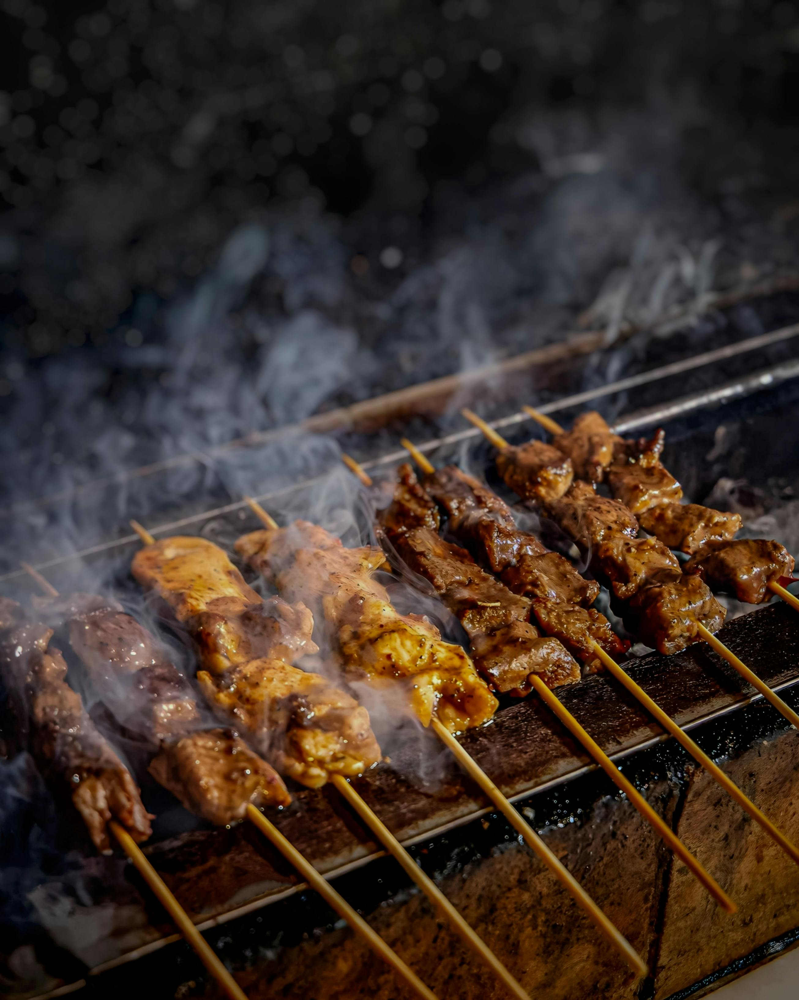

Som Tum (Papaya Salad)
A spicy, tangy shredded green papaya salad mixed with chili, lime juice, peanuts, and fish sauce — fiery and refreshing.
Watch on YouTube


Khanom Buang
Crispy Thai crepes with coconut cream filling.
Watch on YouTubePhoto by Chainwit, licensed under CC BY 4.0.

Eaten Before
(Double click the food)
- Not eaten yet